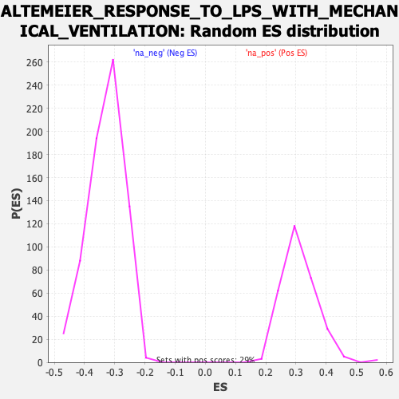

| | | Dataset | DE_genes |
| Phenotype | NoPhenotypeAvailable |
| Upregulated in class | na_pos |
| GeneSet | ALTEMEIER_RESPONSE_TO_LPS_WITH_MECHANICAL_VENTILATION |
| Enrichment Score (ES) | 0.82372856 |
| Normalized Enrichment Score (NES) | 2.6468647 |
| Nominal p-value | 0.0 |
| FDR q-value | 0.0 |
| FWER p-Value | 0.0 |
Table: GSEA Results Summary
 Fig 1: Enrichment plot: ALTEMEIER_RESPONSE_TO_LPS_WITH_MECHANICAL_VENTILATION
Fig 1: Enrichment plot: ALTEMEIER_RESPONSE_TO_LPS_WITH_MECHANICAL_VENTILATION
Profile of the Running ES Score & Positions of GeneSet Members on the Rank Ordered List
| PROBE | GENE SYMBOL | GENE_TITLE | RANK IN GENE LIST | RANK METRIC SCORE | RUNNING ES | CORE ENRICHMENT | | 1 | SELL | | | 0 | 21.201 | 0.0632 | Yes |
| 2 | CLEC4E | | | 2 | 19.346 | 0.1207 | Yes |
| 3 | FCER1G | | | 8 | 15.109 | 0.1654 | Yes |
| 4 | PLEK | | | 12 | 13.584 | 0.2057 | Yes |
| 5 | BCL2A1 | | | 18 | 12.506 | 0.2426 | Yes |
| 6 | CLEC4D | | | 19 | 12.498 | 0.2798 | Yes |
| 7 | GPR84 | | | 29 | 10.842 | 0.3115 | Yes |
| 8 | IFIT2 | | | 30 | 10.658 | 0.3433 | Yes |
| 9 | OAS3 | | | 36 | 9.869 | 0.3723 | Yes |
| 10 | IL1RN | | | 39 | 9.443 | 0.4003 | Yes |
| 11 | ISG15 | | | 44 | 9.032 | 0.4270 | Yes |
| 12 | OAS2 | | | 45 | 8.995 | 0.4538 | Yes |
| 13 | MXD1 | | | 54 | 8.396 | 0.4783 | Yes |
| 14 | TFEC | | | 56 | 8.248 | 0.5028 | Yes |
| 15 | CXCL10 | | | 86 | 6.536 | 0.5203 | Yes |
| 16 | CSF3R | | | 95 | 6.260 | 0.5385 | Yes |
| 17 | GCH1 | | | 100 | 6.188 | 0.5566 | Yes |
| 18 | LCP2 | | | 124 | 5.542 | 0.5717 | Yes |
| 19 | CCL3 | | | 130 | 5.365 | 0.5873 | Yes |
| 20 | CCR1 | | | 175 | 4.383 | 0.5975 | Yes |
| 21 | LILRB2 | | | 183 | 4.180 | 0.6095 | Yes |
| 22 | FGL2 | | | 188 | 4.141 | 0.6216 | Yes |
| 23 | CASP4 | | | 194 | 3.960 | 0.6330 | Yes |
| 24 | GBP4 | | | 200 | 3.826 | 0.6441 | Yes |
| 25 | BCL3 | | | 226 | 3.524 | 0.6530 | Yes |
| 26 | CSF2RB | | | 228 | 3.521 | 0.6634 | Yes |
| 27 | CYBB | | | 231 | 3.449 | 0.6735 | Yes |
| 28 | STAT1 | | | 233 | 3.445 | 0.6837 | Yes |
| 29 | LST1 | | | 236 | 3.376 | 0.6937 | Yes |
| 30 | TRIM22 | | | 241 | 3.342 | 0.7034 | Yes |
| 31 | GPR65 | | | 250 | 3.289 | 0.7126 | Yes |
| 32 | IL1A | | | 261 | 3.130 | 0.7213 | Yes |
| 33 | CCL2 | | | 284 | 2.886 | 0.7285 | Yes |
| 34 | GK | | | 285 | 2.886 | 0.7371 | Yes |
| 35 | IL1R2 | | | 311 | 2.680 | 0.7434 | Yes |
| 36 | CMPK2 | | | 317 | 2.631 | 0.7509 | Yes |
| 37 | C5AR1 | | | 321 | 2.626 | 0.7586 | Yes |
| 38 | IFIH1 | | | 323 | 2.624 | 0.7663 | Yes |
| 39 | IL1B | | | 343 | 2.495 | 0.7725 | Yes |
| 40 | FCGR1A | | | 366 | 2.371 | 0.7781 | Yes |
| 41 | IRF7 | | | 368 | 2.364 | 0.7851 | Yes |
| 42 | HCAR3 | | | 415 | 2.104 | 0.7884 | Yes |
| 43 | CXCL6 | | | 421 | 2.072 | 0.7942 | Yes |
| 44 | STAT2 | | | 423 | 2.057 | 0.8003 | Yes |
| 45 | CCRL2 | | | 426 | 2.048 | 0.8063 | Yes |
| 46 | PLA2G7 | | | 442 | 1.968 | 0.8112 | Yes |
| 47 | LITAF | | | 460 | 1.889 | 0.8157 | Yes |
| 48 | SOD2 | | | 478 | 1.833 | 0.8200 | Yes |
| 49 | BST1 | | | 547 | 1.591 | 0.8203 | Yes |
| 50 | TIFA | | | 624 | 1.419 | 0.8196 | Yes |
| 51 | TLR2 | | | 698 | 1.278 | 0.8187 | Yes |
| 52 | SLC26A4 | | | 715 | 1.254 | 0.8214 | Yes |
| 53 | NFIL3 | | | 745 | 1.204 | 0.8231 | Yes |
| 54 | GBP2 | | | 792 | 1.122 | 0.8234 | Yes |
| 55 | PLAUR | | | 867 | 1.013 | 0.8216 | Yes |
| 56 | VCAN | | | 881 | 0.999 | 0.8237 | Yes |
| 57 | TIMP1 | | | 930 | 0.945 | 0.8234 | No |
| 58 | ITGAM | | | 1010 | 0.840 | 0.8208 | No |
| 59 | MEFV | | | 1230 | 0.657 | 0.8085 | No |
| 60 | RAB20 | | | 1472 | 0.531 | 0.7944 | No |
| 61 | CCL20 | | | 1581 | 0.479 | 0.7888 | No |
| 62 | F3 | | | 1587 | 0.477 | 0.7898 | No |
| 63 | TGM1 | | | 1760 | 0.404 | 0.7799 | No |
| 64 | NFKBIZ | | | 1907 | 0.353 | 0.7714 | No |
| 65 | IL4I1 | | | 2107 | 0.295 | 0.7593 | No |
| 66 | TNFAIP3 | | | 2132 | 0.286 | 0.7586 | No |
| 67 | MARCKSL1 | | | 2686 | 0.178 | 0.7231 | No |
| 68 | NFKBIA | | | 2692 | 0.177 | 0.7233 | No |
| 69 | CD14 | | | 2927 | 0.147 | 0.7085 | No |
| 70 | CEBPD | | | 2951 | 0.145 | 0.7075 | No |
| 71 | CH25H | | | 2998 | 0.140 | 0.7049 | No |
| 72 | SOCS3 | | | 3074 | 0.133 | 0.7004 | No |
| 73 | ADM | | | 3133 | 0.128 | 0.6970 | No |
| 74 | IL36G | | | 3135 | 0.127 | 0.6973 | No |
| 75 | THBS1 | | | 3585 | 0.093 | 0.6684 | No |
| 76 | GDA | | | 3828 | 0.080 | 0.6528 | No |
| 77 | IRGM | | | 3845 | 0.079 | 0.6520 | No |
| 78 | TREX1 | | | 4166 | 0.060 | 0.6314 | No |
| 79 | CCL17 | | | 4682 | 0.033 | 0.5979 | No |
| 80 | MT1X | | | 5827 | -0.028 | 0.5235 | No |
| 81 | PFKFB3 | | | 6050 | -0.042 | 0.5092 | No |
| 82 | SLA | | | 6253 | -0.056 | 0.4962 | No |
| 83 | OSMR | | | 6284 | -0.058 | 0.4944 | No |
| 84 | MAP3K8 | | | 6504 | -0.073 | 0.4804 | No |
| 85 | EBI3 | | | 6654 | -0.085 | 0.4709 | No |
| 86 | USP18 | | | 6702 | -0.088 | 0.4681 | No |
| 87 | RELB | | | 7187 | -0.126 | 0.4370 | No |
| 88 | SERPINE1 | | | 7331 | -0.139 | 0.4281 | No |
| 89 | CCR2 | | | 7409 | -0.145 | 0.4235 | No |
| 90 | HPX | | | 8340 | -0.234 | 0.3636 | No |
| 91 | TNFAIP2 | | | 8546 | -0.256 | 0.3511 | No |
| 92 | IL6 | | | 8782 | -0.284 | 0.3366 | No |
| 93 | MT1E | | | 9058 | -0.318 | 0.3196 | No |
| 94 | SLFN12 | | | 9520 | -0.376 | 0.2907 | No |
| 95 | TNFSF9 | | | 10091 | -0.460 | 0.2550 | No |
| 96 | F13A1 | | | 10137 | -0.468 | 0.2535 | No |
| 97 | CXCL3 | | | 10593 | -0.537 | 0.2254 | No |
| 98 | CCL23 | | | 10746 | -0.560 | 0.2172 | No |
| 99 | ATF3 | | | 11908 | -0.787 | 0.1439 | No |
| 100 | AKAP12 | | | 12025 | -0.810 | 0.1388 | No |
| 101 | CXCL2 | | | 12622 | -0.959 | 0.1029 | No |
| 102 | SAP30 | | | 12866 | -1.033 | 0.0901 | No |
| 103 | SELP | | | 13256 | -1.156 | 0.0682 | No |
| 104 | CSF2 | | | 13417 | -1.218 | 0.0614 | No |
| 105 | IL15 | | | 13797 | -1.380 | 0.0409 | No |
| 106 | ST3GAL1 | | | 13823 | -1.388 | 0.0434 | No |
| 107 | JUNB | | | 14030 | -1.485 | 0.0344 | No |
| 108 | SLC15A3 | | | 14043 | -1.497 | 0.0381 | No |
| 109 | ARG2 | | | 14331 | -1.678 | 0.0244 | No |
| 110 | RCAN1 | | | 14491 | -1.782 | 0.0193 | No |
| 111 | GADD45G | | | 15098 | -2.468 | -0.0128 | No |
| 112 | TFPI2 | | | 15124 | -2.502 | -0.0070 | No |
| 113 | CTPS1 | | | 15223 | -2.721 | -0.0052 | No |
| 114 | MAFF | | | 15377 | -3.396 | -0.0051 | No |
| 115 | UPP1 | | | 15417 | -3.741 | 0.0035 | No |
Table: GSEA details [plain text format]

Fig 2: ALTEMEIER_RESPONSE_TO_LPS_WITH_MECHANICAL_VENTILATION: Random ES distribution
Gene set null distribution of ES for ALTEMEIER_RESPONSE_TO_LPS_WITH_MECHANICAL_VENTILATION